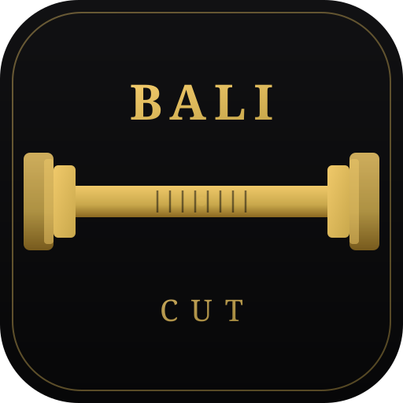

Lunch at 12pm gives insulin ~2.5 hours to drop before your 3:30 MOTS-c injection. Lower insulin at injection time = cleaner AMPK activation. Then eat your pre-workout at 3:45 — 15 minutes after injecting is enough. The carbs from your pre-WO hit right as MOTS-c's glucose partitioning kicks in, driving them straight to muscle. First day without CJC/Ipa — you may feel slightly more hunger today as ghrelin normalizes. Passes by day 3.
| Food | Amount | Prep | Macros | Cals |
|---|---|---|---|---|
Chicken Breast Air fry or pan sear. Season with garlic powder, paprika, salt. 🌯 Chipotle swap: double chicken bowl, black beans, fajita veg, salsa — no rice/cheese/sour cream. | 10 oz raw | Air fryer 375°F 18 min | P: 66g C: 0g F: 6g | 318 |
Egg Whites Scramble in pan alongside chicken. Salt + pepper. | ¾ cup (~6 whites) | Pan scrambled | P: 21g C: 1g F: 0g | 88 |
Jasmine Rice (cooked) Batch cook Sunday. Reheat all week. | ¾ cup cooked | Microwaved | P: 4g C: 40g F: 0g | 180 |
Clear Whey Protein Mix in cold water. Drink alongside meal. | 1 scoop | Shaker with water | P: 20g C: 3g F: 0g | 92 |
Lunch Total | — | — | P: 111g C: 44g F: 6g | 678 |
| Food | Amount | Prep | Macros | Cals |
|---|---|---|---|---|
Barebells Protein Bar Banana Caramel. Eat even if Reta suppression is active. | 1 bar | Ready to eat | P: 20g C: 22g F: 7g | 200 |
Clear Whey Protein One scoop in cold water. Drink 30 min before leaving. | 1 scoop | Shaker | P: 20g C: 3g F: 0g | 92 |
Pre-WO Total | — | — | P: 40g C: 25g F: 7g | 292 |
| Food | Amount | Prep | Macros | Cals |
|---|---|---|---|---|
Salmon Fillet Air fryer 400°F 12 min. Lemon + garlic. No oil needed. | 7 oz raw | Air fryer | P: 40g C: 0g F: 14g | 284 |
Whole Eggs Scrambled or fried. Any style. | 2 large | Pan cooked | P: 12g C: 1g F: 10g | 140 |
Egg Whites Scramble alongside. Fills the plate. | ⅓ cup (~3 whites) | Pan scrambled | P: 11g C: 0g F: 0g | 44 |
Red Potatoes (boiled) Boil until tender. No butter. Salt + pepper only. | 6 oz | Boiled | P: 4g C: 28g F: 0g | 128 |
Dinner Total | — | — | P: 67g C: 29g F: 24g | 596 |
No training = fewer carbs. Rice is cut from dinner entirely — protein + fat from eggs + tuna. Lunch gets a smaller rice portion. Reta should feel noticeably stronger today as ghrelin from CJC/Ipa continues to normalize. Ghrelin rebound should be fading by tonight.
| Food | Amount | Prep | Macros | Cals |
|---|---|---|---|---|
Canned Salmon in Water Drain fully. Flake and season with lemon juice + black pepper. Richer than tuna. | 2 cans (12 oz drained) | Open + drain | P: 44g C: 0g F: 10g | 280 |
Whole Eggs Scrambled alongside. | 2 large | Scrambled | P: 12g C: 1g F: 10g | 140 |
Egg Whites Add to boost protein on salmon days. Scramble alongside eggs. | ¾ cup (~6 whites) | Scrambled | P: 21g C: 1g F: 0g | 88 |
Jasmine Rice (cooked) Smaller portion on rest day. | ½ cup cooked | Microwaved | P: 3g C: 27g F: 0g | 120 |
Clear Whey Protein Cold water shake alongside meal. | 1 scoop | Shaker | P: 20g C: 3g F: 0g | 92 |
Lunch Total | — | — | P: 100g C: 32g F: 20g | 720 |
| Food | Amount | Prep | Macros | Cals |
|---|---|---|---|---|
Ground Turkey or 93% Lean Ground Beef Cook with garlic, cumin, paprika. Taco bowl style. Ground beef works perfectly here. | 8 oz raw | Pan cooked | P: 48g C: 0g F: 11g | 295 |
Egg Whites Scramble in same pan after turkey. Zero fat add. | ½ cup (~5 whites) | Pan scrambled | P: 16g C: 1g F: 0g | 65 |
Avocado Only ¼ avocado. Rest day — fat budget allows it. | ¼ small avocado | Sliced | P: 1g C: 3g F: 7g | 80 |
Clear Whey Protein 2 scoops on rest days — close the protein gap. | 2 scoops | Shaker | P: 40g C: 6g F: 0g | 184 |
Dinner Total | — | — | P: 105g C: 10g F: 18g | 624 |
Three things converge today: (1) Reta dose keeping fat oxidation high, (2) MOTS-c at 3:30pm activating AMPK right before you flood the system with refeed carbs — those carbs go directly to glycogen, not fat storage, (3) KB circuits immediately burn through them. Leptin is restored, metabolism resets, and the MOTS-c mitochondrial adaptation carries forward even after the cycle ends. Scale will be up 1–2 lbs tomorrow from glycogen water — ignore it, it clears in 48 hours.
| Food | Amount | Prep | Macros | Cals |
|---|---|---|---|---|
Chicken Breast Seasoned, air fried. Primary protein anchor. | 10 oz raw | Air fryer | P: 66g C: 0g F: 6g | 318 |
Jasmine Rice (cooked) Bigger portion today. This is the refeed carb load. | 1¾ cups cooked | Microwaved | P: 7g C: 77g F: 1g | 350 |
Whole Eggs 2 whole eggs scrambled. | 2 large | Scrambled | P: 12g C: 1g F: 10g | 140 |
Egg Whites Extra protein without fat. | ½ cup | Scrambled | P: 16g C: 1g F: 0g | 65 |
Lunch Total | — | — | P: 101g C: 79g F: 17g | 873 |
| Food | Amount | Prep | Macros | Cals |
|---|---|---|---|---|
Jasmine Rice (cooked) Leftover from lunch batch. Eat cold or microwave. | 1 cup cooked | Microwaved | P: 4g C: 44g F: 0g | 200 |
Clear Whey Protein ×2 2 scoops in cold water. Fast digesting. | 2 scoops | Shaker | P: 40g C: 6g F: 0g | 184 |
Pre-WO Total | — | — | P: 44g C: 50g F: 0g | 384 |
| Food | Amount | Prep | Macros | Cals |
|---|---|---|---|---|
Salmon Fillet Air fryer. Omega-3s reduce inflammation from heavy KB session. | 7 oz raw | Air fryer 12 min | P: 40g C: 0g F: 14g | 284 |
Red Potatoes (boiled) Larger portion — refeed carbs. Boil until soft, no butter. | 10 oz | Boiled | P: 6g C: 52g F: 0g | 234 |
Whole Eggs 2 eggs alongside. | 2 large | Any style | P: 12g C: 1g F: 10g | 140 |
Dinner Total | — | — | P: 58g C: 53g F: 24g | 658 |
The scale will likely read 1–2 lbs higher today from glycogen water stored with the carbs. This is exactly what should happen — it means the refeed worked. Return to low carbs today. The fat burning acceleration from the leptin reset kicks in over the next 72 hours. Drink a full gallon of water — helps clear the glycogen water faster.
| Food | Amount | Prep | Macros | Cals |
|---|---|---|---|---|
Canned Salmon in Water 2 cans drained. Lemon + pepper. Note: salmon has more fat than tuna — still great choice. | 2 cans (12 oz) | Open + season | P: 44g C: 0g F: 10g | 280 |
Egg Whites Scrambled. Pure protein filler. | ¾ cup (~6 whites) | Scrambled | P: 21g C: 1g F: 0g | 88 |
Clear Whey Protein Salmon has less protein than chicken — whey closes the gap. | 1 scoop | Shaker | P: 20g C: 3g F: 0g | 92 |
Red Potatoes (small) Minimal carbs post-refeed. | 4 oz boiled | Boiled | P: 3g C: 21g F: 0g | 96 |
Lunch Total | — | — | P: 88g C: 25g F: 10g | 556 |
| Food | Amount | Prep | Macros | Cals |
|---|---|---|---|---|
Tilapia Fillets Leanest protein available. Air fry with lemon + garlic. | 10 oz raw | Air fryer 375°F | P: 58g C: 0g F: 5g | 277 |
Whole Eggs 2 eggs — complete amino profile overnight. | 2 large | Any style | P: 12g C: 1g F: 10g | 140 |
Clear Whey Protein 2 scoops on rest days — necessary to hit protein floor. | 2 scoops | Shaker | P: 40g C: 6g F: 0g | 184 |
Avocado ¼ small. Fat signals satiety, no carbs. | ¼ avocado | Sliced | P: 1g C: 3g F: 7g | 80 |
Dinner Total | — | — | P: 111g C: 10g F: 22g | 681 |
| Food | Amount | Prep | Macros | Cals |
|---|---|---|---|---|
Ground Turkey or 93% Lean Ground Beef Taco bowl style. Garlic, cumin, chili powder. Ground beef works as a 1:1 swap. | 9 oz raw | Pan cooked | P: 55g C: 0g F: 12g | 336 |
Egg Whites Scrambled alongside turkey. | ½ cup | Scrambled | P: 16g C: 1g F: 0g | 65 |
Jasmine Rice (cooked) Leg day = full carb allocation. Mix into turkey bowl. | ¾ cup cooked | Microwaved | P: 4g C: 40g F: 0g | 180 |
Clear Whey Protein 1 scoop alongside. | 1 scoop | Shaker | P: 20g C: 3g F: 0g | 92 |
Lunch Total | — | — | P: 95g C: 44g F: 12g | 673 |
| Food | Amount | Prep | Macros | Cals |
|---|---|---|---|---|
Barebells Protein Bar Easy. Non-negotiable before legs day. | 1 bar | Ready to eat | P: 20g C: 22g F: 7g | 200 |
Clear Whey Protein 1 scoop in water. | 1 scoop | Shaker | P: 20g C: 3g F: 0g | 92 |
Pre-WO Total | — | — | P: 40g C: 25g F: 7g | 292 |
| Food | Amount | Prep | Macros | Cals |
|---|---|---|---|---|
Salmon Fillet Omega-3s critical for leg day DOMS reduction. | 7 oz raw | Air fryer | P: 40g C: 0g F: 14g | 284 |
Whole Eggs 2 large — complete amino profile. | 2 large | Any style | P: 12g C: 1g F: 10g | 140 |
Red Potatoes (boiled) Glycogen restock post-legs. No butter. | 6 oz | Boiled | P: 4g C: 32g F: 0g | 144 |
Clear Whey Protein Close out protein for the day. | 1 scoop | Shaker | P: 20g C: 3g F: 0g | 92 |
Dinner Total | — | — | P: 76g C: 36g F: 24g | 660 |
If eating sushi today: Order sashimi + edamame + miso soup. Salmon/tuna sashimi 10–12 pieces = ~50g protein, ~14g fat, 0 carbs. Skip all rolls — the rice adds 40–60g carbs per roll and the sauces destroy the deficit. Use sashimi as your dinner protein source and adjust the rest of the day accordingly.
| Food | Amount | Prep | Macros | Cals |
|---|---|---|---|---|
Chicken Breast Air fried. Season well — you'll be eating it again Sunday. | 10 oz raw | Air fryer | P: 66g C: 0g F: 6g | 318 |
Whole Eggs 2 scrambled. | 2 large | Scrambled | P: 12g C: 1g F: 10g | 140 |
Jasmine Rice (cooked) Full training day portion. | ¾ cup cooked | Microwaved | P: 4g C: 40g F: 0g | 180 |
Clear Whey Protein | 1 scoop | Shaker | P: 20g C: 3g F: 0g | 92 |
Lunch Total | — | — | P: 102g C: 44g F: 16g | 730 |
| Food | Amount | Prep | Macros | Cals |
|---|---|---|---|---|
Barebells Bar + Clear Whey Standard pre-WO. Don't skip — weighted dips + HSPU need fuel. | 1 bar + 1 scoop | Ready | P: 40g C: 25g F: 7g | 292 |
Pre-WO Total | — | — | P: 40g C: 25g F: 7g | 292 |
| Food | Amount | Prep | Macros | Cals |
|---|---|---|---|---|
Salmon + Tuna Sashimi At restaurant: order 12 pieces mixed. Low-sodium soy only. No rolls. | 12 pieces (~240g) | Restaurant order | P: 48g C: 0g F: 12g | 300 |
Edamame (no salt) Order unsalted or lightly salted. Extra protein. | 1 cup shelled | Restaurant order | P: 17g C: 14g F: 8g | 196 |
Miso Soup Electrolytes + sodium. Fine post-training. | 1 bowl | Restaurant | P: 3g C: 4g F: 1g | 36 |
Clear Whey (at home after) If under 200g protein for the day after sushi. | 1 scoop | Shaker | P: 20g C: 3g F: 0g | 92 |
Dinner Total | — | — | P: 88g C: 21g F: 21g | 624 |
MOTS-c's final dose was Friday April 25. From today it's Retatrutide only into Bali. The metabolic benefits don't vanish overnight — mitochondrial adaptations persist 1–2 weeks post-cycle, so you'll still benefit from it through the trip. Reta dose today means appetite suppression peaks tomorrow and Tuesday. Pre-WO is back to 2:45 PM — no injection timing to work around.
| Food | Amount | Prep | Macros | Cals |
|---|---|---|---|---|
Canned Salmon in Water 2 cans drained. Lemon juice + black pepper. Rotate from chicken yesterday. | 2 cans (12 oz) | Open + season | P: 44g C: 0g F: 10g | 280 |
Egg Whites | ¾ cup | Scrambled | P: 21g C: 1g F: 0g | 88 |
Red Potatoes (boiled) Training day carb allocation. | 7 oz | Boiled | P: 4g C: 36g F: 0g | 160 |
Clear Whey Protein | 1 scoop | Shaker | P: 20g C: 3g F: 0g | 92 |
Lunch Total | — | — | P: 89g C: 40g F: 14g | 620 |
| Food | Amount | Prep | Macros | Cals |
|---|---|---|---|---|
Barebells Bar + Clear Whey Incline barbell + dragon flags — need the fuel. | 1 bar + 1 scoop | Ready | P: 40g C: 25g F: 7g | 292 |
Pre-WO Total | — | — | P: 40g C: 25g F: 7g | 292 |
| Food | Amount | Prep | Macros | Cals |
|---|---|---|---|---|
Tilapia Fillets Lean + clean. Lemon, garlic, no oil. Air fryer 375°F 10 min. | 10 oz raw | Air fryer | P: 58g C: 0g F: 5g | 277 |
Whole Eggs | 2 large | Any style | P: 12g C: 1g F: 10g | 140 |
Jasmine Rice (cooked) Smaller dinner portion. | ½ cup cooked | Microwaved | P: 3g C: 29g F: 0g | 130 |
Dinner Total | — | — | P: 73g C: 30g F: 15g | 547 |
Reta solo from here to Bali. Appetite suppression may feel stronger this week with no ghrelin competition from CJC/Ipa and MOTS-c mitochondrial adaptations still active. Don't let suppression cause you to under-eat — hitting 200g+ protein is non-negotiable even when not hungry. Force the pre-workout meal.
| Food | Amount | Prep | Macros | Cals |
|---|---|---|---|---|
Ground Turkey 93% Lean 🌯 CHIPOTLE OPTION: Double chicken or steak, black beans, fajita veg, fresh salsa. No rice, no cheese, no sour cream, no guac. ~50g protein, ~35g carbs, ~480 cal. Works perfectly as your lunch on any day. | 9 oz raw (or Chipotle bowl) | Pan / Chipotle | P: 55g C: 0g F: 12g | 336 |
Egg Whites | ½ cup | Scrambled | P: 16g C: 1g F: 0g | 65 |
Jasmine Rice (cooked) | ¾ cup cooked | Microwaved | P: 4g C: 40g F: 0g | 180 |
Clear Whey Protein | 1 scoop | Shaker | P: 20g C: 3g F: 0g | 92 |
Lunch Total | — | — | P: 95g C: 44g F: 12g | 673 |
| Food | Amount | Prep | Macros | Cals |
|---|---|---|---|---|
Barebells Bar + Clear Whey Standard. Weighted pull-ups demand pre-fuel. | 1 bar + 1 scoop | Ready | P: 40g C: 25g F: 7g | 292 |
Pre-WO Total | — | — | P: 40g C: 25g F: 7g | 292 |
| Food | Amount | Prep | Macros | Cals |
|---|---|---|---|---|
Salmon Fillet Air fryer. Primary dinner protein. | 7 oz raw | Air fryer | P: 40g C: 0g F: 14g | 284 |
Whole Eggs | 2 large | Any style | P: 12g C: 1g F: 10g | 140 |
Red Potatoes (boiled) | 6 oz | Boiled | P: 4g C: 28g F: 0g | 128 |
Clear Whey Protein | 1 scoop | Shaker | P: 20g C: 3g F: 0g | 92 |
Dinner Total | — | — | P: 76g C: 32g F: 24g | 644 |
Push water to 1.5 gallons today. This flushes subcutaneous water retention and helps you look leaner on arrival. Keep sodium moderate — avoid anything heavily salted. Rest day carbs are very low to keep you in fat-burning mode. Sleep as much as possible tonight before travel.
| Food | Amount | Prep | Macros | Cals |
|---|---|---|---|---|
Canned Salmon in Water 2 cans. Hot sauce + lemon. Leanest possible last full day meal. | 2 cans (12 oz) | Open + season | P: 44g C: 0g F: 10g | 280 |
Whole Eggs | 2 large | Scrambled | P: 12g C: 1g F: 10g | 140 |
Egg Whites | ½ cup | Scrambled | P: 16g C: 1g F: 0g | 65 |
Clear Whey Protein | 1 scoop | Shaker | P: 20g C: 3g F: 0g | 92 |
Lunch Total | — | — | P: 92g C: 5g F: 20g | 577 |
| Food | Amount | Prep | Macros | Cals |
|---|---|---|---|---|
Tilapia Fillets Leanest dinner option. Pre-travel: keep it simple. | 9 oz raw | Air fryer | P: 54g C: 0g F: 4g | 248 |
Egg Whites | ½ cup | Scrambled | P: 16g C: 1g F: 0g | 65 |
Clear Whey Protein 2 scoops — rest day protein top-up before travel. | 2 scoops | Shaker | P: 40g C: 6g F: 0g | 184 |
Red Potatoes (small amount) Last carbs before Bali. | 4 oz boiled | Boiled | P: 2g C: 18g F: 0g | 80 |
Avocado ¼ avocado. Healthy fat before travel. | ¼ avocado | Sliced | P: 1g C: 3g F: 7g | 80 |
Dinner Total | — | — | P: 113g C: 28g F: 11g | 657 |
Last KB session before the trip. Hit every set. Finish what you started. Reta dose today carries you into Bali with appetite control for the first few days of travel. Weigh in tomorrow morning fasted — this is your final number. From your starting point of 228.4 lbs on April 20, target is 222–224 lbs.
| Food | Amount | Prep | Macros | Cals |
|---|---|---|---|---|
Chicken Breast Last home-cooked lunch before travel. Season well. | 10 oz raw | Air fryer | P: 66g C: 0g F: 6g | 318 |
Egg Whites | ¾ cup | Scrambled | P: 21g C: 1g F: 0g | 88 |
Jasmine Rice (cooked) Fuel the final KB session. | ¾ cup cooked | Microwaved | P: 4g C: 40g F: 0g | 180 |
Clear Whey Protein | 1 scoop | Shaker | P: 20g C: 3g F: 0g | 92 |
Lunch Total | — | — | P: 111g C: 44g F: 6g | 678 |
| Food | Amount | Prep | Macros | Cals |
|---|---|---|---|---|
Clear Whey ×2 + Rice Cleanest pre-WO for KB circuits. Fast digesting. | 2 scoops + ¾ cup cooked rice | Shaker + microwave | P: 44g C: 39g F: 0g | 332 |
Pre-WO Total | — | — | P: 44g C: 39g F: 0g | 332 |
| Food | Amount | Prep | Macros | Cals |
|---|---|---|---|---|
Salmon Fillet Go out with the best. Air fryer. Lemon, garlic, dill. | 7 oz raw | Air fryer | P: 40g C: 0g F: 14g | 284 |
Whole Eggs | 2 large | Any style | P: 12g C: 1g F: 10g | 140 |
Egg Whites | ⅓ cup | Scrambled | P: 11g C: 0g F: 0g | 44 |
Red Potatoes (boiled) | 5 oz | Boiled | P: 3g C: 27g F: 0g | 120 |
Dinner Total | — | — | P: 66g C: 28g F: 24g | 588 |